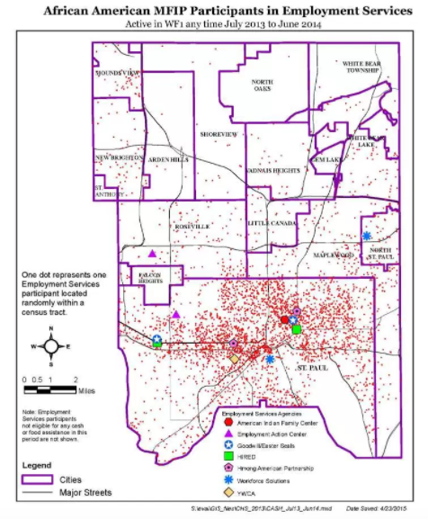
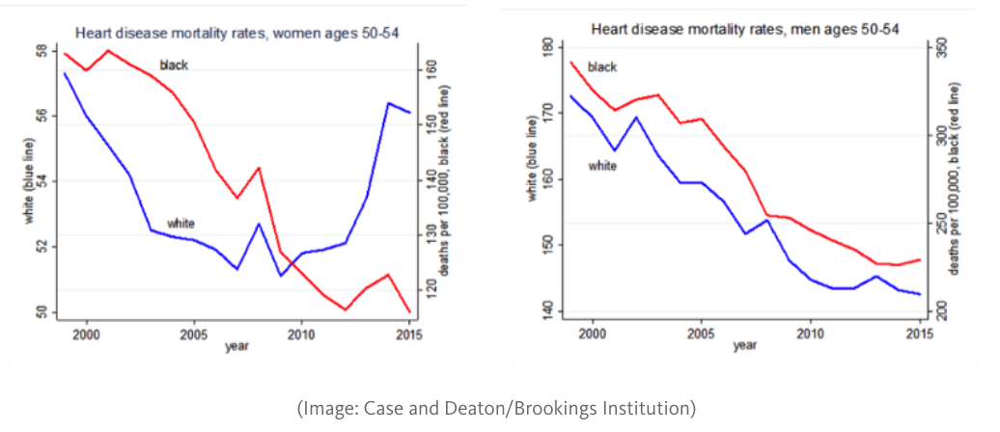

Deconstructing Data Visualization
AIGA
Kate Rabinowitz
@datalensdc
Data Visualization At Its Best Can...
Inform
Source: Buzzfeed
Explain
Source: Washington Post
Challenge

Source: chicagosmilliondollarblocks.com/
Engage
Source: Flowing Data
Awe
Source: Nadieh Bremer
Data Visualization At Its Best Requires:
Good Data
Who Might be Missing by Design?
Source: National LGBTQ Task Force
Who Might Data Collection Leave Out?
Source: DataLensDC
How is the Data Shaped by Its Environment?
Source: DataLensDC
Data Doesn't Exist in a Vacuum
Source: The Racial Dot Map
Data Visualization At Its Best Requires:
Good Design
Data Doesn't Speak for Itself
Source: Flowing Data
Design Can Shape an Entire Narrative
Source: Lies, Damn Lies, and Statistics
Color Can Create a Deeper Connection to the Data
Source: Reprojected Destruction
When Used Poorly, Color Can Perpetuate Inequality
Source: Evergreen Data
And Reinforce Antiquated Cultural Norms
Framing Can Help Show or Hide the Point
Source: Uber
At Worst, It Can Distort the Point and Perpetuate Inequality
Source: PS Mag
At Best, Annotations Help Guide the Reader to the Point

Today's Challenge: Visualizing Uncertainty
Communicating the Gray Areas of Polling
Source: Bloomberg Brexit Watch
Showing More than Just the Most Probable
Source: Scientific American
Softening the Edges
Source: Mona Chalabi